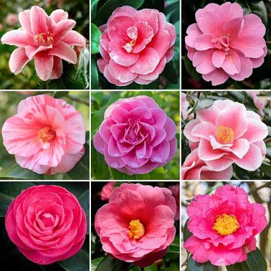
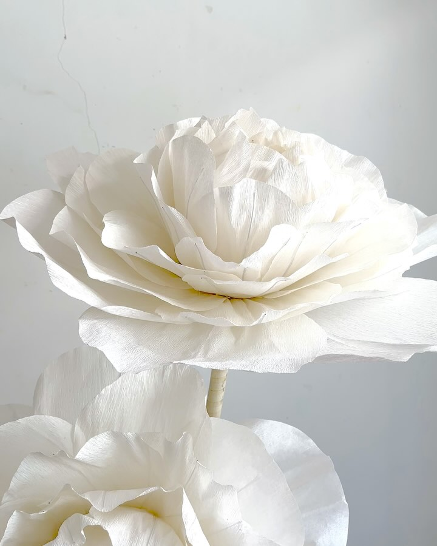

Референси (01-13)

Image 01
Значення квітки Камелія
1. Символ сумної долі та печалі
Завдяки знаменитому роману Александра Дюма-сина «Дама з камеліями», ця квітка міцно закріпилася в культурі як символ трагічного кохання, жертовності та неможливості бути разом. Вона означає розставання через обставини або долю, а не через те, що почуття згасли.
2. Холодна краса та байдужість
Камелія не має запаху, а її пелюстки здаються майже восковими або порцеляновими. Через це у вікторіанській мові квітів вона іноді означала «досконалість без душі» або байдужість. Дарувати її могли на знак того, що стосунки стали «холодними».
3. Значення за кольорами
Якщо говорити про класичну мову квітів:
- Біла камелія — досконалість, але також туга («Ти чарівна, але ми не можемо бути разом»).
- Червона камелія — палке кохання, яке палає в серці («Ти полум'я в моєму серці»), але без взаємності воно перетворюється на біль розлуки.
- Рожева камелія — туга за кимось, бажання бути поруч («Я сумую за тобою»).
Підсумок
Якщо гвоздика чи жовта троянда означають «Ми розходимося», то камелія — це радше «Я сумую за тобою в розлуці» або «Наша любов трагічна і неможлива».
Варіанти (14-18)

Image 14